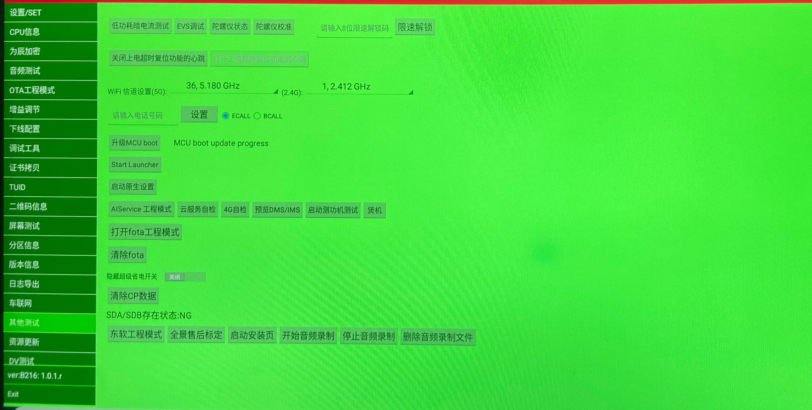
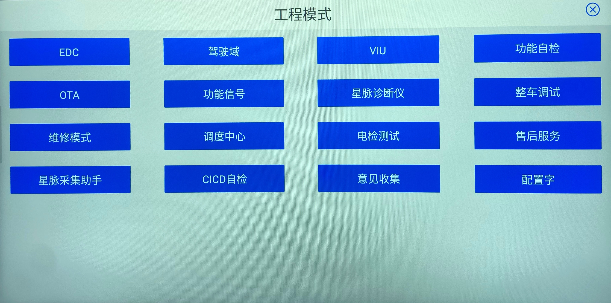
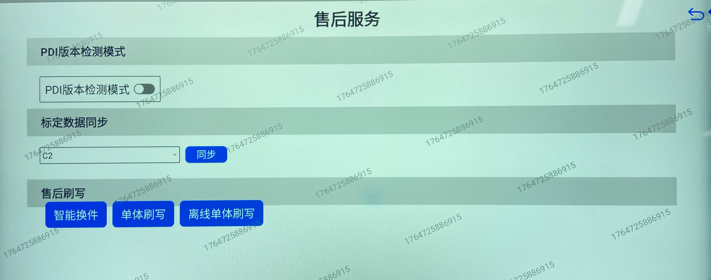
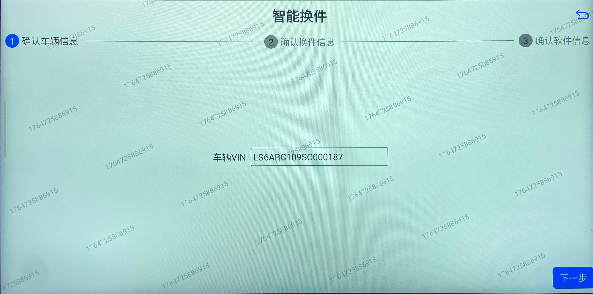
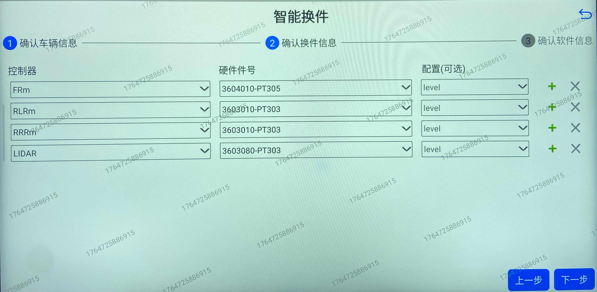
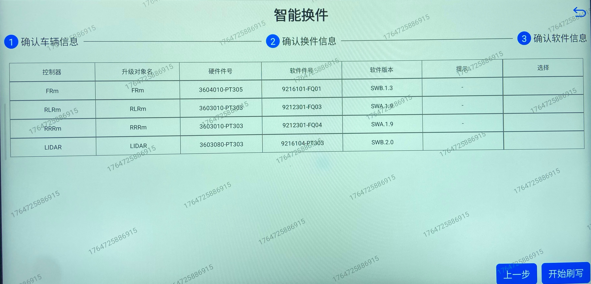

Обновление через диагностический прибор
Во время процесса обновления ECU категорически запрещается отключать питание или разъем соединения, так как это может привести к повреждению ECU.
Bluetooth должен оставаться неподключенным; ввести с клавиатуры Bluetooth код *#* для перехода в инженерный режим,

点击“ 其他测试”，然后点击“ 打开fota工程模式”，通过账号进入“售后服务”模块，进入“售后刷写”。

Вход в инженерный режим автомобиля: войти в инженерный режим, нажать «Интеллектуальная замена деталей»

Подтвердить информацию об автомобиле. В интерфейсе автоматически отобразится VIN-код; убедиться, что VIN-код на экране совпадает с реальным VIN-кодом автомобиля, в случае несовпадения отредактировать и настроить его в соответствии с реальным VIN-кодом автомобиля.

确认换件信息。根据实际需要换的零部件，点击控制器下拉箭头，选择“ FRm”，点击硬件件号下拉箭头，选择“ 3604010-PT305”。选择完成后，点击“ 下一步”。

Подтвердить информацию о программном обеспечении. В этом интерфейсе данные из облака подтягиваются автоматически; убедившись в их правильности, нажать «Начать прошивку».

Дождаться завершения процесса прошивки.